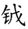

广平兄：
昨（十三日）寄一信，今天则寄出期刊一束，怕失少，所以挂号，非因特别宝贵也。束中有《新女性》一本，大作在内，又《语丝》两期，即登着我之发牢骚文，盖先为未名社截留，到底又被小峰[335]夺过去了，所以仍在《语丝》上。
慨自寄了二十三日之信，几乎大不得了，伟大之钉子，迎面碰来，幸而上帝保佑，早有廿九日之信发出，声明前此一函，实属大逆不道，应即取消，于是始蒙褒为“傻子”，赐以“命令”，作善者降之百祥[336]，幸何如之。
现在对于校事，已悉不问，专编讲义，作一结束，授课只余五星期，此后便是考试了。但离校恐当在二月初，因为一月份薪水，是要等着拿走的。
中大又有信来，催我速去，且云教员薪水，当设法增加，但我还是只能于二月初出发。至于伏园，却在二十左右要走了，大约先至粤，再从陆路入武汉。今晚语堂饯行，亦颇有活动之意，而其太太则大不谓然，以为带着两个孩子，常常搬家，如何是好。其实站在她的地位上来观察，的确也困苦的，旅行式的家庭，教管理家政的女性如何措手。然而语堂殊激昂。后事如何，只得“且听下回分解”了。
狂飙中人一面骂我，一面又要用我了。培良要我在厦门或广州寻地方，尚钺[337]要将小说编入《乌合丛书》去，并谓前系误骂，后当停止，附寄未发表的骂我之文稿，请看毕烧掉云。我想，我先前的种种不客气，大抵施之于同年辈或地位相同者，而对于青年，则必退让，或默然甘受损失。不料他们竟以为可欺，或纠缠，或奴役，或责骂，或诬蔑，得步进步，闹个不完。我常叹中国无“好事之徒”，所以什么也没有人管，现在看来，做“好事之徒”实在也大不容易，我略管闲事，就弄得这么麻烦。现在是方针要改变了，地方也不寻，丛书也不编，文稿也不看，也不烧，回信也不写，关门大吉，自己看书，吸烟，睡觉。
《妇女之友》第五期上，有沄沁[338]给你的一封公开信，见了没有？内中也没有什么，不过是对于女师大再被毁坏的牢骚。我看《世界日报》[339]，似乎程干云仍在校，罗静轩[340]却只得滚出了，报上有一封她的公开信，说卖文也可以过活，我想，怕很难罢。
今天白天有雾，器具都有点潮湿。蚊子很多，过于夏天，真是奇怪。叮得可以，要躲进帐子里去了，下次再写。
十四日灯下。
天气今天仍热，但大风，蚊子忽而很少了，不知道是怎么一回事。于是编了一篇讲义。印泥已从上海寄来，此刻就在《桃色的云》上写了几个字，将那“玻璃”印和印泥都第一次用在这上面，豫备等《莽原》第二十三期到来时，一同寄出。因为天气热，印泥软，所以印得不大好，但那也不要紧。必须如此办理，才觉舒服，虽被斥为“多事”，亦不再辩，横竖受攻击惯了的，听点申斥又算得什么。
本校并无新事发生。惟山根先生仍是日日夜夜布置安插私人；白果从北京到了，一个太太，四个小孩，两个用人，四十件行李，大有“山河永固”之意。不知怎地我忽而记起了“燕巢危幕”[341]的故事，看到这一大堆人物，不禁为之凄然。
十五夜。
十二日的来信，今天（十六）就到了，也算快的。我看广州厦门间的邮信船大约每周有二次。假如星期二，五开的罢，那么，星期一，四发的信更快，三，六发的就慢了，但我终于研究不出那船期是星期几。
贵校的情形，实在不大高妙，也如别的学校一样，恐怕不过是不死不活，不上不下。一沾手，一定为难。倘使直截痛快，或改革，或被打倒，爽快，或苦痛，那倒好了。然而大抵不如此。就是办也办不好，放也放不下，不爽快，也并不大苦痛，只是终日浑身不舒服，那种感觉，我们那里有一句俗话，叫作“穿湿布衫”，就是恰如将没有晒干的小衫，穿在身体上。我所经历的事情，几乎无不如此，近来的作文印书，即是其一。我想接手之后，随俗敷衍，你一定不能；改革呢，能办到固然好，即使自己因此失败也不妨，但看你来信所说，是恐怕没有改革之望的。那就最好是不接手，倘难却，则仿“前校长”的老法子：躲起来。待有结束后，再出来另觅事情做。
政治经济，我晓得你是没有研究的，幸而只有三星期。我也有这类苦恼，常不免被逼去做“非所长”，“非所好”的事。然而往往只得做，如在戏台下一般，被挤在中间，退不开去了，不但于己有损，事情也做不好。而别人见你推辞，却以为谦虚或偷懒，仍然坚执要你去做。这样地玩“杂耍”一两年，就只剩下些油滑学问，失了专长，而也逐渐被社会所弃，变了“药渣”了，虽然也曾煎熬了请人喝过汁。一变药渣，便什么人都来践踏，连先前喝过汁的人也来践踏，不但践踏，还要冷笑。
牺牲论究竟是谁的“不通”而该打手心，还是一个疑问。人们有自志取舍，和牛羊不同，仆虽不敏，是知道的。然而这“自志”又岂出于本来，还不是很受一时代的学说和别人的言动的影响的么？那么，那学说的是否真实，那人的是否确当，就是一个问题，我先前何尝不出于自愿，在生活的路上，将血一滴一滴地滴过去，以饲别人，虽自觉渐渐瘦弱，也以为快活。而现在呢，人们笑我瘦弱了，连饮过我的血的人，也来嘲笑我的瘦弱了。我听得甚至有人说：“他一世过着这样无聊的生活，本早可以死了的，但还要活着，可见他没出息。”于是也乘我困苦的时候，竭力给我一下闷棍，然而，这是他们在替社会除去无用的废物呵！这实在使我愤怒，怨恨了，有时简直想报复。我并没有略存求得称誉，报答之心，不过以为喝过血的人们，看见没有血喝了就该走散，不要记着我是血的债主，临走时还要打杀我，并且为消灭债券计，放火烧掉我的一间可怜的灰棚。我其实并不以债主自居，也没有债券。他们的这种办法，是太过的。我近来的渐渐倾向个人主义，就是为此；常常想到像我先前那样以为“自所甘愿，即非牺牲”的人，也就是为此；常常劝别人要一并顾及自己，也就是为此。但这是我的意思，至于行为，和这矛盾的还很多，所以终于是言行不一致，恐怕不足以服足下之心，好在不久便有面谈的机会，那时再辩论罢。
我离厦门的日子，还有四十多天，说“三十多”，少算了十天了，然则心粗而傻，似乎也和“傻气的傻子”差不多，“半斤八两相等也”。伏园大约一两日内启行，此信或者也和他同船出发。从今天起，我们兼包饭菜了，先前单包饭的时候，每人只得一碗半（中小碗），饭量大的人，兼吃两人的也不够，今天是多一点了，你看厨子多么利害。这里的工役，似乎都与当权者有些关系，换不掉的，所以无论如何，只好教员吃苦，即如这个厨子，原是国学院听差中之最懒而最狡猾的，兼士费了许多力，才将他弄走，而他的地位却更好了。他那时的主张，是：他是国学院的听差，所以别人不能使他做事。你想，国学院是一所房子，会开口叫他做事的么？
我向上海买书很便当，那两本当即去带，并遵来命，年底面呈。
迅。十六日下午。
注 释
[335] 小峰 即李小峰（1897—1971），江苏江阴人，北京大学哲学系毕业，曾参加新潮社和语丝社，当时是上海北新书局主持人。
[336] 作善者降之百祥 语出《尚书·伊训》：“惟上帝不常，作善降之百祥，作不善降之百殃。”
[337] 尚

（1902—1982） 号宗武，一作钟吾，河南罗山人，历史学家。早期参加莽原社，后为狂飙社成员。这里所说“小说”指《斧背》，后列为《狂飙丛书》之一，1928年5月上海泰东图书局出版。[338] 沄沁 即吕云章（1891—1974），字倬人，别名沄沁，山东蓬莱人，女师大国文系毕业。她在《妇女之友》第五期（1926年11月）上发表的《寄景宋的公开信》，谈及许广平离开女师大后，林素园率领军警武装接收女师大等情形。《妇女之友》，半月刊，1926年9月创刊于北京。
[339] 《世界日报》 1925年2月创刊于北京，成舍我主办。1926年9月21日该报刊登“女师大领得俄款”的消息中说：“女师大应得款项六千余元，由前总务长程干云代领”，所以鲁迅说程干云“似乎仍在校”。
[340] 罗静轩（1896—1979） 湖北红安人。北京女子高等师范学校毕业，当时任北京女子学院舍务主任。因学校失火，烧死学生事引咎辞职。1926年12月6日，她在《世界日报》上发表致北京女子学院教职员及全体同学公开信，其中有“静轩虽不才，鬻文为生，尚足养母”等语。
[341] “燕巢危幕” 语出《左传》襄公二十九年：“夫子之在此也，犹燕之巢于幕上。”